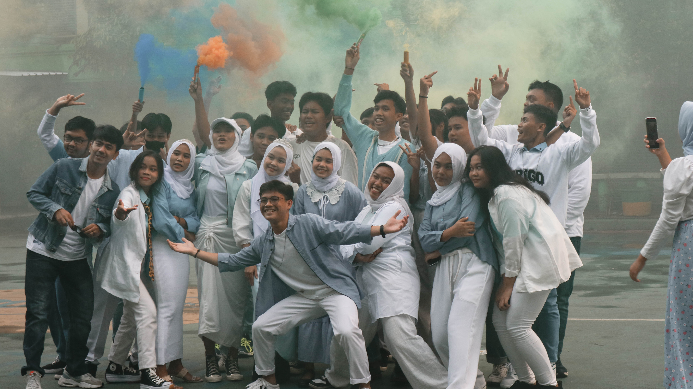

Selamat Datang di Website SMK Pustek Serpong
Website SMK Pustek Serpong ini diharapkan dapat meningkatkan layanan pendidikan kepada siswa, orangtua, dan masyarakat pada umumnya. Sebaliknya orangtua dapat mengakses informasi tentang kegiatan akademik dan non akademik putra - puterinya di sekolah ini.

Kurikulum
SMK Pustek Serpong menggunakan kurikulum SMK 2013 REV. untuk menggantikan Kurikulum-2006 (yang sering disebut sebagai Kurikulum Tingkat Satuan Pendidikan) yang telah berlaku selama kurang lebih 6 tahun.

Ruang Kelas
SMK Pustek Serpong mempunyai 36 ruang kelas yang dibagi menjadi 4 gedung.